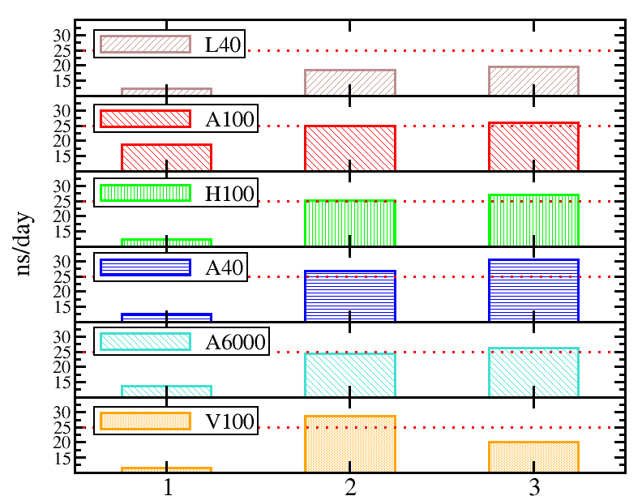

Application examples¶
Good practices¶
Use your project directory instead of the home directory
The HOME directory has a limited storage space (~25 GB). Your project directory
/proj/nobackup/hpc2n202X-XYZ has a much larger space.
Create a soft-link to your storage project
It will be very convinient to create a soft-link to your storage project in your home directory for a faster navigation:
Monitoring the use of resources
Most likely you will allocate many cores and many GPUs for your simulations. You can
monitor the use of these resources with the job-usage job_ID command, where job_ID
is the output number of the sbatch command. You can also see this number if you type
squeue -u my-username. job-usage outputs a url that you can copy/paste in your
local browser where you can see how resources are being used:

Problems with software?
Create a support ticket on SUPR for HPC2N (recommended option). If you are in a hurry, write to us via email: support@hpc2n.umu.se, to create a ticket that will allow us to track the issue. Something to consider when you open a ticket:
-
Describe the problem and the versions of the software you used
-
Provide a test case we can copy to try ourselves. The test case can be a reduced example or the real case. Pack all relevant files in a folder. Write in the ticket the path to the folder.
-
If you already opened a ticket use this ticket thread to discuss the issue instead of creating other tickets.
-
For unrelated issues open new tickets.
-
If you consider that the error is solved, please let us know so that we can close the ticket. This will help us to keep the ticket system clean.
Matlab¶
How to find Matlab¶
Matlab is available through the Menu bar if you are using ThinLinc client (recommended). Additionally, you can load a Matlab module on a Linux terminal on Kebnekaise. Details for these two options can be found here.
First time configuration¶
The first time you access Matlab on Kebnekaise, you need to configure it by following these guidelines Configuring Matlab. After configuring the cluster, it is a good practice to validate the cluster (HOME -> Parallel -> Create and Manage Clusters):

Notice that it is recommended to use a small number of workers for the validation, in this case 4.
Tools for efficient simulations¶
Chart flow for a more efficient Matlab code using existing tools adapted from Mathworks documentation on parallel computing:

MATLAB on GPUs
Notice that MATLAB currently supports only NVIDIA GPUs (v100,a40,a6000,a100,l40s,h100), with v100 and l40s being the most abundant (10 nodes each).
Use MATLAB for lightweight tasks on the login nodes
Remember that login nodes are used by many users and if you run heavy jobs there, you will interfere with the workflow of them.
Exercises¶
Exercise 1: Matlab serial job
The folder SERIAL contains a function funct.m
which performs a FFT on a matrix.
The execution time is obtained with tic/toc and written down in the output file called
log.out. Run the function by using the MATLAB GUI with the help of the script submit.m.
As an alternative, you can submit the job via a batch script job.sh. Here, you will need to fix the Project_ID with the one provided for the present course and the Matlab version.
Exercise 2: Matlab parallel job
-
PARFORfolder contains an example of a parallelized loop with the “parfor” directive. A pause() function is included in the loop to make it heavy. This function can be submitted to the queue by running the script submit.m in the MATLAB GUI. The number of workers can be set by replacing the string FIXME (in the “submit.m” file) with the number you desire. Try different values for the number of workers from 1 to 10 and take a note of the simulation time output at the end of the simulation. Where does the code achieve its peak performance? -
SPMDfolder presents an example of a parallelized code using SPMD paradigm. Submit this job to the queue through the MATLAB GUI. This example illustrates the use of parpool to run parallel code in a more interactive manner.
Exercise 3: Job Arrays
JOBARRAYS folder shows an example for job arrays.
The batch file is job.sh. In this exercise, one submits
an array of 28 tasks where the task IDs are used as input arguments for a MATLAB function which performs operations on a matrix whose size depends on the task ID. Submit the
script and notice what is written in the output files.
Instead of a single matrix, could you initialize two matrices of (50*sz,50*sz) and compute the summation of them, instead of the fast Fourier transform (FFT)? Use only 14 tasks in the job array.
Exercise 4: Matlab GPU job
GPU folder contains a test case that computes a Mandelbrot set both
on CPU mandelcpu.m
and on GPU mandelgpu.m. You can submit the jobs through
the MATLAB GUI using the submitcpu.m and submitgpu.m files.
The final output if everything ran well are two .png figures which display the timings for both architectures. Use the “eom” command on the terminal to visualize the images (eom out-X.png)
R¶
How to find R¶
Similar to Matlab, R is available through the Menu bar if you are using ThinLinc client (recommended). Additionally, you can load a Matlab module on a Linux terminal on Kebnekaise. Details for these two options can be found here.
First time configuration¶
The first time you access R on Kebnekaise, you need to configure it by following the Preparations step.
Recommendations¶
Be aware of data duplication in R
Some parallel functions mcapply in this example, tend to replicate the data for
the workers (cores) if the dataframe is modified by them. This can be crucial if you
are working with a large data frame and you are employing several parallel functions,
for instance during the training of machine learning models because your simulation could
easily exceed the available memory per node.
library(parallel)
library(pryr)
prev <- mem_used()
print(paste("Memory initially allocated by R:", prev/1e6, "MB"))
# Define a relatively large dataframe
data_df <- data.frame(
ID = seq(1, 1e7),
Value = runif(1e7)
)
# Create a function to be applied to each row (or a subset of rows)
process_function <- function(i, df) {
# do some modification the i-th row
return(df$Value[i] * 2)
}
prev <- mem_used() - prev
print(paste("Memory after the serial code execution:", prev/1e6, "MB"))
# Use mclapply to process the dataframe in parallel
num_cores <- 4
results <- mclapply(1:nrow(data_df), function(i) process_function(i, data_df), mc.cores = num_cores)
prev <- mem_used() - prev
print(paste("Memory after parallel code execution:", prev/1e6, "MB"))
In this example mem-dup.R, I used the function mem_used() provided by the pryr package
to monitor the memory usage. The batch script for this example is job.sh.
One possible solution for data duplication could be to use use a data frame for each worker that includes only the relevant data for that particular computation.
Use R for lightweight tasks on the login nodes
Remember that login nodes are used by many users and if you run heavy jobs there, you will interfere with the workflow of them.
Exercises¶
Requirements
Prior to running the examples, you will need to install several packages. Follow these instructions){:target=”_blank”}:
-
The packages needed are:
For this R version (check if they are not already installed)
ml GCC/10.2.0 OpenMPI/4.0.5 R/4.0.4
Rmpi
doParallel
caret
MASS
klaR
nnet
e1071
rpart
mlbench
parallel
Exercise 1: R serial job
In the SERIAL folder, a serial is provided. Submit the script
job.sh with the command R CMD and also with Rscript. Where could
it be more suitable to use Rscript over R CMD?
Why do we need the flag #SBATCH -C ‘skylake’ in the batch script?
Exercise 2: Job Arrays
JOB-ARRAYS folder shows an example for job arrays, the batch file is job.sh. Submit the
script and notice what is written in the output files.
Could you use job arrays in your simulations if you need to run many simulations where some parameters are changed? As an example, imagine that you need to run 28 simulations where a single parameter, such as the temperature, is changed from 2 to 56 C. Could you use the variable task_id in the previous script to get that range of temperatures so that each simulation prints out a different temperature?
Exercise 3: Parallel jobs with Rmpi
In the folder RMPI, you can find the R script Rmpi.R which uses 5
MPI slaves to apply the runif() function on an array “c”. The submit file is
job_Rmpi.sh. As a result, you will see the random numbers
generated by the slaves in the slurm output file
Exercise 4: Parallel jobs with doParallel
The folder DOPARALLEL contains two examples:
-
doParallel.R shows how to use the foreach function in sequential mode (1 core) and the parallel mode using 4 cores. What is the difference in the usage of foreach for these two modes?
Submit the job_doParallel.sh script and compare the timings of the sequential and parallel codes.
How many workers are allocated for this simulation? If you want to allocate more or less, what changes must be made to these files?
-
doParallel_ML.R presents the evaluation of several ML models in both sequential and parallel modes using the standard “iris” database. The difference is basically in the use of %dopar% instead of %do% function.
Submit the batch script job_doParallel_ML.sh to the queue.
In the output file observe the resulting elapsed times for the sequential and the 4 cores parallel simulation.
Upon submitting the job to the queue you will get a number called job ID. Use the command:
job-usage job_IDto obtain a URL which you can copy/paste in your local browser. Tip: refresh your browser several times to get the statistics.
Can you see how the CPU is used? What about the memory?
Note 1: In order to run this exercise, you need to have all the packages listed at the beginning of this document installed.
Note 2: If you want to try a different number of cores for running the scripts, you should change that number in both the .R and .sh scripts
Exercise 5: Machine Learning jobs
In the folder ML we show a ML model using a sonar database
and Random Forest as the training method (Rscript.R). The simulations are done both in serial
and parallel modes. You may change the values for the number of cores (1 in the present case)
to other values. Notice that the number of cores needs to be the same in the
files job.sh and Rscript.R.
Try a different number of cores and monitor the timings which are reported at the end of the output file.
Alphafold¶
How to find Alphafold¶
Alphafold is installed as a module, see the documentation page.
Notice that on the Intel nodes there are more
versions of Alphafold installed than on the AMD nodes. Thus, if you are targeting one
version that is only installed on the Intel nodes, you will need to add the instruction
#SBATCH -C skylake to your batch script, otherwise the job could arrive to an
AMD node that lacks that installation.
Exercises¶
Exercise 1: Running single jobs
In the exercises folder ALPHAFOLD/SINGLEJOBS you will find a fasta secuence for a monomer and the
corresponding batch file job.sh for running the simulation on
GPUs. Try running the simulation with CPUs only and then with l40s, v100 and a100 GPUs.
Notice that the simulation will take ~1hrs. so the purpose of this exercise is to know if the simulation starts running well only.
Exercise 2: Running job arrays
In the exercises folder ALPHAFOLD/JOBARRAYS you will find 8 fasta sequeces seq[1-8].fasta,
these sequences are listed in the file list_sequences.txt.
The job script job.sh will allow you to run several simulations
in a compact manner where each fasta sequence is used as an input for Alphafold. In the present script, a suggestion for using 1 or 2 GPU cards is provided.
Notes: 1) the simulation will take ~1hrs. so the purpose of this exercise is to know
if the simulation starts running well only. 2) Don’t forget to monitor the resources by
using the job-usage tool.
CryoSPARC¶
How to find CryoSPARC¶
The version 4.5.3 of CryoSPARC is installed as a module, here is the documentation page.
First time configuration¶
One needs a license for using this software. For
academic purposes a free of charge license can be requested at the website
cryosparc.com (one working day for the processing).
Once you obtain your license ID copy it, create a file called /home/u/username/.cryosparc-license and paste
it in the first line of this file. In the second line of the file write your email address.
Using CryoSPARC on Kebnekaise¶
Create a suitable folder in your project directory, for instance /proj/nobackup/hpc2n202X-XYZ/cryosparc
and move into this folder. Download/copy the lane*tar files that are located
here to the cryosparc
folder and untar them here (tar -xvf lane_CPU.tar as an example).
Fix your Project_ID and time
Change the string Project_ID in the file lane*/cluster_script.sh to reflect your current project.
Also, the time was set to 20 min. in these files but for your realistic simulations you can change it to
longer times (-t 00:20:00).
The lanes should be recognized by CryoSPARC when it starts running.
Load the CryoSPARC modules. Start CryoSPARC and accept the request which asks about continuing using cryostart and that the folder was not used before. List the users on the server (which should be only yourself for this type of license), check the email address that is displayed for this user (it should be the one you added in the license file) and reset the password to. These steps are summarized here:
$cryosparc start
...
Do you wish to continue starting cryosparc? [yN]: y
...
CryoSPARC master started.
From this machine, access CryoSPARC and CryoSPARC Live at
http://localhost:39007
...
$cryosparc listusers
cryosparc resetpassword --email "myemail@mail.com" --password "choose-a-password"
Copy and paste the line which has the localhost port (notice that port number can change) to a browser on Kebnekaise:

After loging in, you will be able to see the CryoSPARC’s dashboard:

There are several tutorials at the CryoSPARC website, in the previous picture I followed the Introductory Tutorial (v4.0+).
Use cryosparc instead of cryosparcm
On Kebnekaise the command cryosparc should be used and not the one cited in the tutorial cryosparcm
Depending on the job type, CryoSPARC would suggest the hardware resources. For instance, in the tutorial above Step 4: Import Movies suggests using 1 CPU upon queueing it, but Step 5: Motion Correction suggests using 1 GPU. For CPU-only jobs you can choose the CPU lane, and if your job uses GPUs you can choose among L40s, V100, A100, and H100. Notice that the V100 and L40s are the most abundant at the moment:

When you finish your analysis with CryoSPARC, shut it down with the command cryosparc stop on the terminal.
Otherwise the server keeps running on the login node.
Additional information can be obtained from a tutorial given during a workshop on Berzelius
and also
from the NSC documentation. Notice that although the guidelines are for machines different to Kebnekaise,
the systems are very similar and you could get ideas from them. For instance, the cryosparc copylanes is not yet
supported on Kebnekaise and you will need to follow the step above (manually copying the lanes) for getting lanes working.
Nextflow¶
How to find Nextflow¶
Nextflow is installed as a module that can be loaded directly without any requirements.
Notice that on the Intel nodes there are more versions of this software installed
than on the AMD nodes. Thus, if you are targeting one
version that is only installed on the Intel nodes, you will need to add the instruction
#SBATCH -C skylake to your batch script, otherwise the job could arrive to an
AMD node that lacks that installation.
Exercises¶
Exercise 1: Arabidopsis
The data for running this example can be found in this paper and more details about the analysis can be found there as well. We have downloaded the data for you and you can get it by copying the files to your working project:
$cd /proj/nobackup/your-project
$mkdir nextflow-arabidopsis
$cd nextflow-arabidopsis
$cp /proj/nobackup/hpc2n/SR*gz
$wget https://raw.githubusercontent.com/hpc2n/intro-course/master/exercises/NEXTFLOW/ARABIDOPSIS/design_test.csv
$wget https://raw.githubusercontent.com/hpc2n/intro-course/master/exercises/NEXTFLOW/ARABIDOPSIS/job.sh
Fix the Project_ID to match the current project you are part of and send the job to the queue. This example takes ~3 hrs. so the purpose of this exercise is just to show you how to run this job with Nextflow.
Exercise 2: Interactive job submission
Nextflow allows you to submit jobs interactively on the Kebnekaise’s command line. You need to write a file with the instructions to be executed by Nextflow, in the present case, it is a file wc.nf which unzips a file file.txt.gz and counts the number of lines in it. A configuration file for the cluster hpc2n.config is needed with some parameters that need to be changed with your personal information. Similarly to the previous exercise, you can follow these commands:
$cd /proj/nobackup/your-project
$mkdir nextflow-interactive
$cd nextflow-interactive
$wget https://raw.githubusercontent.com/hpc2n/intro-course/master/exercises/NEXTFLOW/INTERACTIVE/wc.nf
$wget https://raw.githubusercontent.com/hpc2n/intro-course/master/exercises/NEXTFLOW/INTERACTIVE/file.txt.gz
$wget https://raw.githubusercontent.com/hpc2n/intro-course/master/exercises/NEXTFLOW/INTERACTIVE/hpc2n.config
load the Nextflow module and send the job interactively by typing the command on the Kebnekaise’s terminal (fix the project ID):
$ml Nextflow/24.04.2
$nextflow run wc.nf -c hpc2n.config --input file.txt.gz --project hpc2n202X-XYZ --clusterOptions "-t 00:05:00 -n 28 -N 1"
Here, you will run the job on 28 cores. On a different terminal tab you can check that the job is submitted/running with the command squeue -u your-username.
Apptainer¶
How to find Apptainer¶
Apptainer is site-installed meaning that you can run it without loading a module. Apptainer is supported on
Kebnekaise instead of Singularity. The recipes that are built/run with Singularity can also be built/run with
Apptainer with the same parameters. You will need to replace the command singularity by apptainer.
If you are curious, you will notice that the command singularity is also available on Kebnekaise but it is just
a soft-link to apptainer:
$which singularity
/bin/singularity
$ls -lahrt /bin/singularity
lrwxrwxrwx 1 root root 9 Mar 14 18:30 /bin/singularity -> apptainer
Use R for lightweight tasks on the login nodes
As with any other software, use Apptainer on the login node for simple tasks, for instance building a lightweight image, otherwise run a batch job.
Exercises¶
Exercise 1: Building and running an Apptainer image
This is an example for building a software called Gromacs. Build a Gromacs container as follows in the directory which contains the gromacs.def definition file:
Download the benchMEM.tpr file here and place it in the directory where the .sif is generated. In fact you can place the files at any other location but then you will need to modify the paths in the job.sh batch script.
Submit the job.sh file to the queue. The output of Gromacs including its performance at the bottom of it (line with the ns/day string) is written in the md.log files. As a comparison, after running the Apptainer image, the module of Gromacs is loaded and the same simulation is run.
TensorFlow¶
How to find TensorFlow¶
Several versions of TensorFlow are installed as modules on Kebnekaise. Similarly to other software, on Intel nodes there are more versions of this software installed than on the AMD nodes.
Exercises¶
Exercise 1: Running TensorFlow simulations
In this exercise, you will run a script with TensorFlow v. 2.15 on GPUs. Notice that
because this version of TensorFlow is available on all the NVIDIA GPUs, you just need
to write the type of GPUs you want to use, in the present case l40s. There are
three different examples in the TENSORFLOW folder under the exercises one:
hello_tensorflow.py (prints out Hello, TensorFlow! string),
loss.py (it computes a loss in a model), and
mnist_mlp.py (which runs a model using the MNIST database).
The batch script is job.sh. Submit the job with different types of GPUs.
Jupyter Notebooks¶
You can use Jupyter Notebooks on Kebnekaise through JupyterLab. Jupyter Notebooks allow you to work in a more interactive manner which is convenient when you are at the development phase of your project. There are available kernels for most popular languages: R, Python, Matlab, and Julia to work in a Jupyter Notebook.
How to find JupyterLab¶
Several versions of JupyterLab are installed as modules on Kebnekaise. Similarly to other software, on Intel nodes there are more versions of this software installed than on the AMD nodes.
Using Jupyter Notebooks on Kebnekaise¶
Guidelines for running Jupyter Notebooks on Kebnekaise can be found here.
Exercises¶
Exercise 1: Running a Jupyter Notebook
Because the tasks executed in a Jupyter Notebook are, in general, computationally expensive it is more convenient to run them on a compute node instead of the login nodes. To do this, you need to prepare a batch script like this one job.sh.
Once you submit your job and it starts running, check the output file slurm*out and search for the string http://b-cnwxyz.hpc2n.umu.se:8888/lab?token=xy…z. Copy this string and paste it in a browser on Kebnekaise. You will be directed to the dashboard of JupyterLab.
A couple of notes:
-
You can change the type of the GPU where you want to run the notebook
-
Cancel the job (
scancel job_ID) if you stop using the notebook
Exercise 2: Running Infomap in a Jupyter Notebook
Infomap is a software for network community detection. It could be convenient for you to work in a Jupyter Notebook if the simulations are not long and you need to see the graphical results right away. Here, there are the steps you can follow to get Infomap running on a notebook:
# Create a suitable folder in your project and move into it
$mkdir /proj/nobackup/hpc2n202Q-XYZ/infomap-workspace
$cd /proj/nobackup/hpc2n202Q-XYZ/infomap-workspace
# Purge and load JupyterLab module and dependencies
$module purge
$module load GCCcore/13.2.0 JupyterLab/4.2.0
# Create a isolated environment for this project called "infmpenv" and activate it
$python -m venv ./infmpenv
$source infmpenv/bin/activate
# Install ipykernel to be able to create your own kernel for this environment
$pip install --no-cache-dir --no-build-isolation ipykernel
# Install Infomap, Networkx, and Matplotlib
$pip install --no-cache-dir infomap networkx matplotlib
# Install the kernel
$python -m ipykernel install --user --name=infmpenv
After doing these installations, download the Jupyter Notebook for Infomap, create a data and output folders as follows:
$wget https://raw.githubusercontent.com/mapequation/infomap-notebooks/master/1_1_infomap_intro.ipynb
$mkdir data
$cd data
$wget https://raw.githubusercontent.com/mapequation/infomap-notebooks/master/data/ninetriangles.net
$cd ..
$mkdir output
Fix the project ID in the batch job job.sh and send it to the queue. As in the previous exercise, copy and paste the url with the host name, port, and token to a browser on Kebnekaise. Then, open the notebook you downloaded and choose the kernel you just created:

Exercise 3: CPU and GPU code for Julia set
In this exercise, you will compute the Julia set in both CPU and GPU. The GPU part will be done by using the CuPy library. A nice feature in this example is that it shows you how you could use multi-GPUs by modifying the initial single GPU case. Here are the guidelines for running this notebook:
# Create a suitable folder in your project and move into it
$mkdir /proj/nobackup/hpc2n202Q-XYZ/juliaset-workspace
$cd /proj/nobackup/hpc2n202Q-XYZ/juliaset-workspace
# Purge and load JupyterLab module and dependencies
$module purge
$module load GCCcore/13.2.0 JupyterLab/4.2.0
# Create a isolated environment for this project called "infmpenv" and activate it
$python -m venv ./mandelenv
$source mandelenv/bin/activate
# Install ipykernel to be able to create your own kernel for this environment
$pip install --no-cache-dir --no-build-isolation ipykernel
# Install the kernel
$python -m ipykernel install --user --name=mandelenv
# Load a CUDA library
$ml CUDA/12.5.0
# Install Numpy, Matplotlib, and CuPy
$pip install --no-cache-dir --no-build-isolation numpy matplotlib cupy-cuda12x
After these installations, download the Jupyter Notebook for Juliaset as follows:
$wget https://raw.githubusercontent.com/hpc2n/intro-course/master/exercises/JUPYTERNOTEBOOKS/GPUS/Juliaset.ipynb
Fix the project ID in the batch job job.sh and send it to the queue. As in the previous exercise, copy and paste the url with the host name, port, and token to a browser on Kebnekaise. Choose the kernel mandelenv you recently created.
Exercise 4: Matlab in a Jupyter notebook
One can run a Jupyter notebook with a Matlab kernel and also take advantage of the Python environment to execute Python code, such as common AI libraries, in Matlab. You can follow these steps to get this combo working:
# Load Matlab
ml MATLAB/2023a.Update4
# Load a Python version compatible with Matlab and also CUDA (if you will run on GPUs)
ml GCCcore/11.3.0 Python/3.10.4 CUDA/11.7.0
# Create an environment called matlabenv (you can change this name)
python -m venv ./matlabenv
# Activate this environment
source matlabenv/bin/activate
# Perform installations: upgrade pip, and packages that you will need
pip install --upgrade pip
pip install -U scikit-learn
# Install Jupyterlab
pip install jupyterlab
# Install the Matlab proxy
pip install jupyter-matlab-proxy
Fix the project ID in the batch job job.sh
and send it to the queue.
As in previous exercises, copy and paste the url with the host name, port, and token to a browser on Kebnekaise. If you cloned this repository
you will have a copy of the matlab_kernel.ipynb
notebook under exercises/JUPYTERNOTEBOOKS/MATLAB. Choose the MATLAB kernel to execute this notebook:

When you try to run the notebook, Matlab will ask for a type of license. Because you are running this notebook on our HPC center, you can choose the option Existing License and then Start MATLAB.
In the same notebook at the bottom, we show you how to run a simple Python script digits.py in Matlab with the pyrunfile command. This Python script uses an AI library.
AMBER¶
Amber (Assisted Model Building with Energy Refinement) is a suite of tools for running Molecular Dynamics and analyzing the dynamical trajectories, see the documentation page.
How to find AMBER¶
AMBER is installed as a module on Kebnekaise. Notice that on the Intel nodes there are
more versions of this software installed than on the AMD nodes. Thus, if you are targeting one
version that is only installed on the Intel nodes, you will need to add the instruction
#SBATCH -C skylake to your batch script, otherwise the job could arrive to an
AMD node that lacks that installation.
A comparison of runs on the various types of nodes on Kebnekaise is displayed below. We evaluated the performance of different AMBER implementations including Sander-MPI (with 28 cores), PMEMD-MPI (with 28 cores), and PMEMD-GPU (with 1 MPI processes and 1 or 2 GPU card(s)). The figure below shows the best performance of AMBER. The benchmark case consisted of 158944 particles, using 1 fs. for time step and a cutoff of 1.2 nm. for real space electrostatics calculations. Particle mesh Ewald was used to solve long-range electrostatic interactions. Data used for this benchmarking can be obtained through the following exercises.
Exercises¶
Exercise 1: Running a MPI PMEMD job
The input files for the exercises are located in the folder exercises/AMBER. Thus, if you clone this repository you will find the files in this folder. Run the script job-mpi-pmemd.sh as it is and look at the performance of the simulation (average number of nanoseconds per day) which is written at the bottom of the output file 03_Prod.mdout.
Job submission command: sbatch job-mpi-pmemd.sh (fix your project ID)
Exercise 2: Optimal performance of a MPI PMEMD job
Running with more cores doesn’t always mean better performance. Run the script job-mpi-pmemd.sh with a different number of MPI tasks (-n) and obtain the value for the performance of AMBER (as a function of the number of cores). The performance of AMBER can be obtained from the average number of nanoseconds per day (ns/day) in the file 03_Prod.mdout.
A plot of the number of ns/day vs. number of cores can help you to visualize the results. Is it worth it to go from 14 cores to 28 cores? What about going from 28 cores to 42 cores? Or even from 42 cores to 56 cores?
Exercise 3: Optimal performance of a GPU PMEMD job
Run the script job-gpu-pmemd.sh with a different number of MPI tasks (-n) and obtain the value for the performance of AMBER (as a function of the number of cores). You are encourage to plot the average number of ns/day vs. number of cores as in the previous case. What is the optimal value for the number of MPI tasks?
Hint: Going above 4 MPI tasks will not give you better performance because in AMBER the number of MPI tasks are tightly bound to the number of GPU cards.
Exercise 4: Monitoring the performance of your jobs
Change the number of steps (nstlim) to 100000 in the file 03_Prod.in. Also, set the number of cores (-n) to 28 (1 node) and the time (-t) to 15 min in the file job-mpi-pmemd.sh. By submitting the job to the queue with sbatch job-mpi-pmemd.sh you get a number as output, this number is the job ID. On the command line, type job-usage job_ID. This will generate a URL that you can copy/paste to your local browser to monitor the efficiency of your simulation. How efficient is it in your case?
Hint: on the top right corner you can change the update frequency of the plots from 15m to 1m for instance. It takes a few minutes before you can see the results on the plots.
Gromacs¶
Gromacs (GROningen MAchine for Chemical Simulations) is a versatile package to perform molecular dynamics, i.e. simulate the Newtonian equations of motion for systems with hundreds to millions of particles, see the documentation page.
How to find Gromacs¶
Gromacs is installed as a module on Kebnekaise. Notice that on the Intel nodes there are
more versions of this software installed than on the AMD nodes. Thus, if you are targeting one
version that is only installed on the Intel nodes, you will need to add the instruction
#SBATCH -C skylake to your batch script, otherwise the job could arrive to an
AMD node that lacks that installation.
We performed a benchmark of Gromacs on the different Nvidia GPUs that are available on Kebnekaise using the batch script job-gpu-gromacs.sh. The results can be seen in the following plot. The labels 1,2, and 3 refer to the three different and common options to run Gromacs written in this batch job. A dashed red line at 25 ns/day is added for better visualization.

Exercises¶
Exercise 1: Running a MPI job
The input files for this exercise are located in GROMACS/MPI.
Go to this folder and run the script job-mpi-gromacs.sh
by using different values of the
number of MPI tasks (-n). Submit this file to the batch queue (sbatch job-mpi-gromacs.sh). Use the
number you get from sbatch (this is called job ID) to get an URL on the command line by typing:
job-usage job_ID.
Then, copy and paste that URL on your local browser. After ~1 min. you will start to see the usage of the resources. Tip: In the top-right corner change the updating default 15m to 30s.
In the plot for CPU usage, you can see how efficiently are the requested resources being used (in percentage). How efficient is your simulation?
Exercise 2: Running a GPU job
In the GROMACS/GPU folder, take a look at the script job-gpu-gromacs.sh. At the end of the script you will find three different ways to run Gromacs, the first one being the default one (no Offloading any task to GPUs), the second one the MPI version where nonbonded/PME interactions are offloaded to GPUs, and the third one being the Threaded-MPI version with nonbonded/PME interactions offloaded to GPUs. Submit the job to the queue and monitor the usage with the job-usage command that was introduced in the previous exercise.
When the script finishes, you should see a step-like plot (in the graphana interface for job-usage results) for the CPU/GPU usage where each step denotes each simulation. Based on these results, what is the best of the three options in the script (for the current nr. of cores and GPUs) for running Gromacs?
You can check if this analysis agrees with the performance for each run as reported in the log file measured in ns/day.
What is the percentage of the GPUs used in the simulation based on the results from job-usage?
How is the performance on GPUs version compared to that on CPU-only version in the previous examples?
More information on Gromacs performance can be found in the documentation for performance improvement of this software.
Gaussian/GaussView¶
The license for Gaussian and GaussView at HPC2N is valid for users at UMU only. Gaussian is a program for computing the electronic structure of molecules. Its companion GaussView is a graphical interface that allows you to design molecules and Gaussian input scripts as well as analyze the results from the simulations.
How to find Gaussian and GaussView¶
The modules for Gaussian and GaussView can be loaded directly without any requirement. More information about Gaussian can be found here and for GaussView here.
Exercises¶
Exercise 1: Load GaussView and open a .com (or .gjf) file
An input file for GaussView is located here input.com.
In this test case you will compute the single point energy of two truncated ADP molecules with a single
Magnesium ion in between. The input files for Gaussian, such as input.com, can be generated through
GaussView but the Link 0 commands %cpu and %gpucpu which are relatively new in Gaussian will need to
be written manually. These commands replaced the previous %nprocshared from the Gaussian 09 version.
Load GaussView module load gaussview/6.1.1 and start it on the command line vglrun gv. Then,
open the input.com file which is located in the folder exercises/GAUSSIAN. It should look like this:

Exercise 2: Running a job through sbatch
If you already have a .com (or .gjf) file, for instance the one in the previous example, you can submit your job to the queue with
the sbatch job.sh command by using a batch job file like job.sh.
Here, you need to change the project ID to your own, the number of cores (-c), and the number of GPU cards (–gpus) needed.
For this exercise, you can use -c 4 and --gpus=1.
Notes:
-
If your .com (or .gjf) file contains the
%nprocsharedLink 0 command, it will be replaced to the corresponding%cpuand%gpucpuby the scriptg16.set-cpu+gpu-listthat is contained in the job.sh script. -
If your .com (or .gjf) file already contains the
%cpuand%gpucpuLink 0 commands, the values will be replaced according to the SBATCH options in the job.sh script. -
If you only want to run on CPUs (maybe the method you are targeting doesn’t have a GPU implementation, for instance), you will need to remove the
%gpucpucommand from the input.com file and the-C nvidia_gpuand--gpusoptions in the job.sh script.
Exercise 3: Running a job through GaussView
In GaussView go to Preferences and in the Job Setup option choose execute using custom command line, and in the box write sbatch job.sh and then Ok:
Put the job.sh script in the current folder and fix the project ID, number of cores, and number of GPU cards as in the previous exercise.
Then, go to Gaussian Calculation Setup and Submit the job:

A warning message on the termination of the job without producing a log file will appear and you can OK to close this window.
You can check that the job is in the queue with the squeue --me command on the terminal.
NAMD¶
NAMD Molecular Dynamics Software is one of the fastest and highly scalable packages in the world for the simulation of molecular systems.
How to find NAMD¶
NAMD is installed as a module on Kebnekaise, see the documentation page.
Notice that on the Intel nodes there are
more versions of this software installed than on the AMD nodes. Thus, if you are targeting one
version that is only installed on the Intel nodes, you will need to add the instruction
#SBATCH -C skylake to your batch script, otherwise the job could arrive to an
AMD node that lacks that installation.
The figure below shows the best performance of NAMD on CPUs and GPUs. The benchmark case consisted of 158944 particles, using 1 fs. for time step and a cutoff of 1.2 nm. for real space electrostatics calculations. Particle mesh Ewald was used to solve long-range electrostatic interactions. Here, CL refers to the classical simulations setup, MTS means multiple time stepping algorithm, and RM is the resident mode implementation. Data used for this benchmarking can be obtained through the following exercises.
Exercises¶
Exercise 1: Running a MPI job
Classical simulations (CL)
The input files for this exercise are located in NAMD/MPI.
Go to the MPI/ folder and run the script job-mpi.sh (sbatch job-mpi.sh) after. The input file for NAMD is step4_equilibration.inp. Take a look
at the file output_mpi.dat and search for the lines starting with “Info: Benchmark”,
they report the performance of NAMD in days/ns.
Another way to see the performance is by using the Julia script located in the NAMD/ folder. To
do this load Julia on the terminal and execute it with the name of the output file from NAMD as an
input argument:
Multiple time step simulations (MTS)
Instead of the step4_equilibration.inp input script in job-mpi.sh, use now the script
step4_equilibration_mts.inp which makes use of the multiple time step (MTS) algorithm. This line is commented currently. You can remove the hash symbol on this line
and comment the line where step4_equilibration.inp input file is used. In the MTS algorithm slow interactions (for instance coulombic) are computed less frequently than
the fast ones. This can lead to faster simulations.
Get the performance as you did previously and compare it with the one you already have.
Exercise 2: Running a GPU job
NVIDIA GPUs
In the NAMD/GPU folder you can see the relevant files for the simulation.
The batch script is job-gpu.sh. Submit this script to the queue
with sbatch job-gpu.sh after choosing an NVIDIA GPU type. You can use the number you get from sbatch (this is called
job ID) to get an URL on the command line by typing:
Then, copy and paste that URL on your local browser. After ~1 min. you will start to see the usage of the resources. Tip: In the top-right corner change the updating default 15m to 30s. When the script finishes, you should see a plot for the CPU/GPU usage.
What is the performance on GPUs w.r.t. the one obtained on CPUs?
What is the percentage of the GPUs used in the simulation based on the results from job-usage?
AMD GPUs
There is one AMD GPU node on Kebnekaise where NAMD can run. At the moment this version is not installed as a module but you can try it to see its performance by using a container provided by AMD. Pay attention to the line “User(s) of the NAMD container(s) are reminded to register …”.
In order to use the container, pull it with apptainer on the command line in a folder of your choice:
Then, you can go to the directory where the .inp files of NAMD are (this directory can be the same as my-folder) and use the script job-amd-gpu.sh to submit the job to the queue. In the option labeled as 1., a classical (CL) simulation will be run, while in the option 2. the resident mode (RM) will be used where most of the computations are offloaded to the GPU.
Compare the performance of these two cases.
Keypoints
-
Kebnekaise is a highly heterogeneous system. Thus, you will need to consciously decide the hardware where your simulations will run.
-
Notice that Intel nodes have at the moment more versions installed of some software than the AMD nodes.
-
It is a good practice to monitor the usage of resources, we offer the command
job-usage job_IDon Kebnekaise.